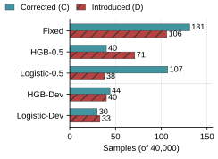
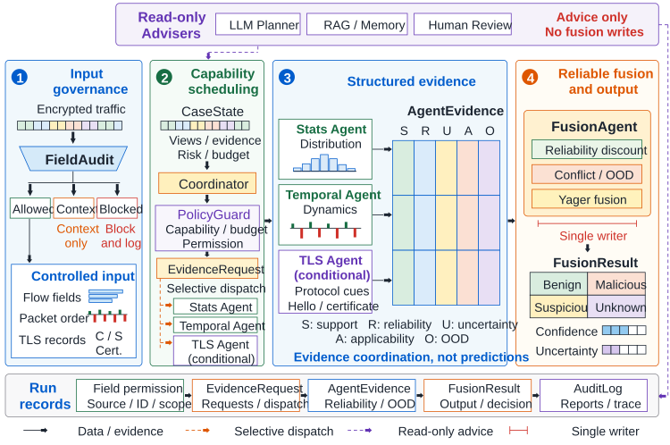

What can be fitted?
OOF expert disagreements supply the arbiter’s fitting examples.
NETWORK SECURITY · CONTROLLED EMPIRICAL STUDY
A Controlled Study of Development Support
When experts disagree, what information actually supports the choice?
Author-review manuscript · MIT-licensed code
me-fake-you/traffic-expert-selection ↗
THREE QUESTIONS. THREE DISTINCT OBJECTS.
OOF expert disagreements supply the arbiter’s fitting examples.
Complete prediction vectors reveal which threshold candidates the selection role can tell apart.
False alarms and misses expose the cost of the selected policy on held-out groups.
THE EMPIRICAL RECORD
A fixed candidate grid, direct controls, and one backend sensitivity test. Positive, zero, and negative outcomes stay together.

Logistic-0.5 has 44 more net corrections than Fixed. Its Macro-F1 difference is +0.110 percentage points, with a conditional 95% interval of [−0.037, +0.357]. The development-selected version does not retain the point advantage.
Matched-quota high-coverage subsets produce more Logistic errors but fewer HGB errors in one fold. The recall-filter ablation leaves all 90 dependent choices unchanged.
Claim-to-file evidence map ↗Separate populations are displayed separately; they must not be ranked against one another.
| Policy | Macro-F1 | Mal. recall | FPR | Corrected | Introduced |
|---|---|---|---|---|---|
| Loading recorded results… | |||||
SYSTEM CONTEXT
The binary study evaluates the Temporal / Stats path. TLS, advisers, Yager fusion, and four-way outputs remain system background.

INSPECTABLE BY DESIGN
The portable component replays frozen candidate predictions. It saves selection decisions before reading outer-role matrices and checks exact-vector equivalence, simple controls, and the finite-set error decomposition.
Raw traffic, endpoints, checkpoints, and row-level data are not bundled. The historical source archive is not a turnkey training package.
python -m pip install -r requirements.txt
python -m unittest discover -s tests -v
python scripts/check_results.pyThese checks verify code behavior and saved arithmetic. Full frozen-prediction replay additionally requires the original matrix inputs.